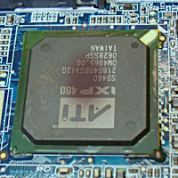
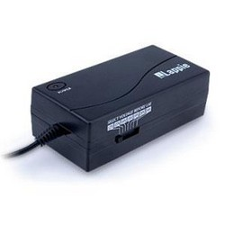
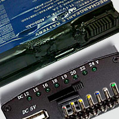

ПРОБЛЕМИ С НИСКОКАЧЕСТВЕНИ И СТАРИ БАТЕРИИ ИЛИ АДАПТОРИ
Дънната платка условно може да се раздели на две части: едната е тази, която се грижи за включване на лаптопа и подсигурява всички захранващи напрежения за всички компоненти, а втората е тази, която определя функционалността на лаптопа и неговата нормална работа. Ако условно казано захранващата първа част не функционира добре, тогава няма как втората да започне да работи. Захранващата част на дънната платка съдържа два основни чипа, които може да наречем процесори - Charger и StandBy процесори. Без тяхната нормална работа лаптопа няма пълна функционалност, макар че сме виждали частично повредени процесори, които продължават да поддържат лаптопа работещ, макар и не в пълната му функционалност.
Charger процесора стои буквално на входните захранващи вериги, следи и управлява събития свързани с източника на захранване на целия лаптоп:
- следи дали е включен захранващия адаптор;
- следи дали е включена батерия;
- през него StandBy процесора "разговаря" с батерията и разбира какво и е състоянието;
- ако е включена батерия и адаптор, и ако батерията се нуждае от заряд тогава той се грижи за заряда на батерията като контролира тока на заряд;
- ако не е включен адаптор, а батерията е в лаптопа, тогава той се грижи да превключи лаптопа за работа на батерия.
По този начин той осигурява правилен източник на захранване на целия лаптоп.
StandBy процесора има централно място в дънната платка, грижи се и управлява събития, свързани с нормалното захранване на дънната платка, за да може тя да заработи нормало. Той е високоинтегриран процесор и съвместява различни функции. Ето някои от тях:
- Една от най-важните функции, които извършва е така наречения ACPI (Advanced Configuration and Power Interface) както и Power Management, т.е. функции свързани с запускане на лаптопа, система за заспиване (Sleep режим), събуждане от заспиване работа на батерия, намаляване на консумация при работа на батерия и т.н.;
- Динамичното и интелигентно управление на вентилатора или вентилаторите или общо казано на охладителната система на лаптопа;
- почти винаги тук се намира управлението на клавиатурата;
- специфичен интерфейс за комуникации, който е известен като Serial Peripheral Interface Bus;
- в него се намират цифрово-аналогови преобразуватели, които се използват за различни следящи вериги;
- тук се намират и External SPI Flash Interface, който служи за комуникация с различни сензори, USB, LAN, програмиране на BIOS-a на лаптопа, часовника в лаптопа и много други;
Сами разбирате, че това е връзката на лаптопа с околния свят или по-скоро със захранващите компоненти - батерията и захранващия адаптор. Когато тези компоненти са нискокачествени или много остарели (особено батерията) има голяма вероятност за дефект в StanBy и Charger веригите. Понякога тези вериги дефектират поради начина на експлоатация, а понякога просто защото са поставени в специфични условия на постоянни промени и основния захранващ ток за лаптопа преминава през тях.
Най-честите случаи, при които се появяват дефекти в тези вериги са следните:
- употреба на универсални адаптори, които имат превключватели за различни изходни напрежения. Този превключвател може да се премести на друго захранващо напрежение, дори и докато го пренасяте в чантата си. А ако имате малко и любопитно дете, това се случва често с универсалните адаптори. Подаването на по-високи напрежения са фатални за лаптопите и има огромен шанс дънната платка да не може повече да бъде отремонтирана;
- Ако лаптопа не е ползван много време (например повече от месец), през това време батерията ако е била в лаптопа и ако тя е вече поизносена, има голяма вероятност напрежението на елементите и да е паднало до или под кричини нива. След като захраните лаптопа отново, има шанс тя да започне да консумира по-висок ток от нормалното и това да доведе до повреда в Charger веригите;
- Има много предложения в интернет за покупка на батерии, които са произведени отдавна или са произведени с нискокачествени клетки и електронни платки. Тези батерии обикновено се познават по ниската си цена. Такива батерии крият риск при поставянето им в лаптопа и свързването на адаптора към лаптопа. Има голям шанс напрежението на клетките да е паднало под или около критичното. В този случай при първоначално включване на захранващия адаптор има риск да протече висок заряден ток, който да повреди Charger веригите. Това не би трябвало да се случва, защото производителя на лаптопа трябва да е предвидил този случай по време на проектирането на дънната платка. Но за съжаление всичко това се случва, а при някои производители дори повече;
- ако батериите са нискокачествени и имат дефекти в електронната си платка тогава има шанс за протичане на висок ток, който да доведе до стопяване на корпуса на батерията и дори до стопяване на корпуса на лаптопа.
Ето няко изображения на дефекти в StandBy веригите, Charger веригите, универсални адаптори с превключватели на изходните напрежения и проблемни нискокачествени батерии:



Внимавайте при покупката на нов захранващ адаптор или нова батерия! Според гаранционния срок ще познаете качествените продукти! Имайте предвид, че надписите върху некачествените продукти не отговарят на съдържанието и са доста завишени. Върху универсалните захранващи адаптори са написани мощности, които не отговарят на истината. Ако по време на покупката сте го закупили според този надпис, тогава със сигурност адаптора ви ще дефектира в най-скоро време, особено ако батерията ви е нормално функционираща. Ако батерията ви издържа малко време значи, че или написаното върху нея не е истина или е произведена с нискокачествени елементи. Бъдете практични при вашите покупки!
Ако е дошло времето за смяна на вашата батерия или за нейното регенериране тогава можете да посетите нашия специализиран сайт за тази цел www.SmartBattery.eu